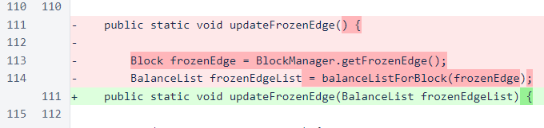
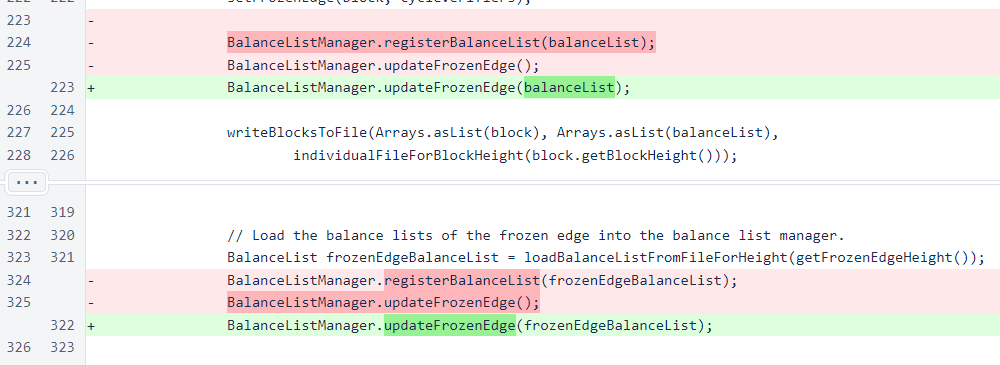
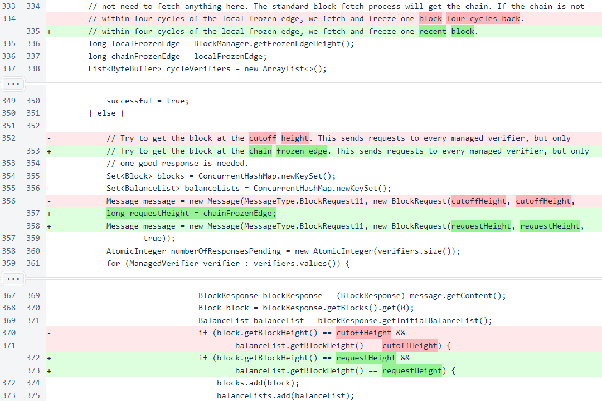

Nyzo version 528 (commit on GitHub) corrects an issue with the block-freezing process, and it also corrects a separate sentinel initialization issue.
This version affects the verifier, sentinel, and client.
Recent performance improvements in the balance-list manager caused two different initialization issues. One of these issues potentially affected all three run modes. The other issue only affected new sentinels or sentinels that had been offline for more than 4 cycles.
BalanceListManager.updateFrozenEdge() was modified to accept the frozen-edge list as an argument. This method is only called from two places in BlockManager. Previously, the frozen-edge balance list was registered just before this method was called. Then, this method would retrieve the frozen-edge list by getting the frozen-edge block and the calling balanceListForBlock(). In some cases, however, balanceListForBlock() would return null, even though a balance list for the appropriate height had just been registered.
The balanceListForBlock() method needs to be re-examined and further refined, as its failure was the root cause of this problem. However, any changes made to that method will have further-reaching effects in the code than this change and will need to be considered more carefully and tested more thoroughly. This change is simple: we know what balance list the updateFrozenEdge() method needs, and we know that it is unable to obtain that balance list in some instances. We are now passing the balance list directly into the method instead of using a registration/lookup process that is more complicated and known to sometimes fail.
In the two places where BalanceListManager.updateFrozenEdge() is called, both in BlockManager, the frozen-edge list is now provided as an argument. The call to BalanceListManager.registerBalanceList() has been eliminated in both cases, as the balance-list map is cleared and rebuilt in the updateFrozenEdge() method.
The other correction is in the Sentinel class. Balance lists near the retention edge can no longer be fetched from verifiers. The sentinel now starts working from the frozen edge if it needs a balance list.
The unavailability of balance lists near the retention edge results in a significantly longer time that a new sentinel must wait before it can protect its verifiers. Before, the sentinel had to fetch 4 cycles of blocks before it could protect verifiers. Now, it must wait for 4 cycles of blocks to be created. At the current cycle size of 1181, this takes just over 9 hours. In future versions, a method for fetching historical blockchain data will be added, and this 9-hour wait should be reduced to just a few minutes.
